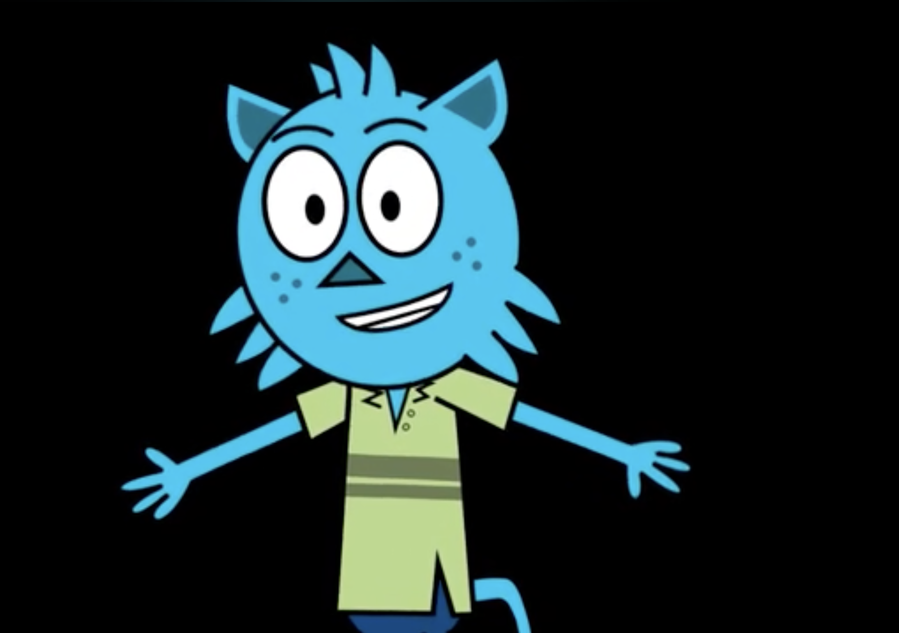
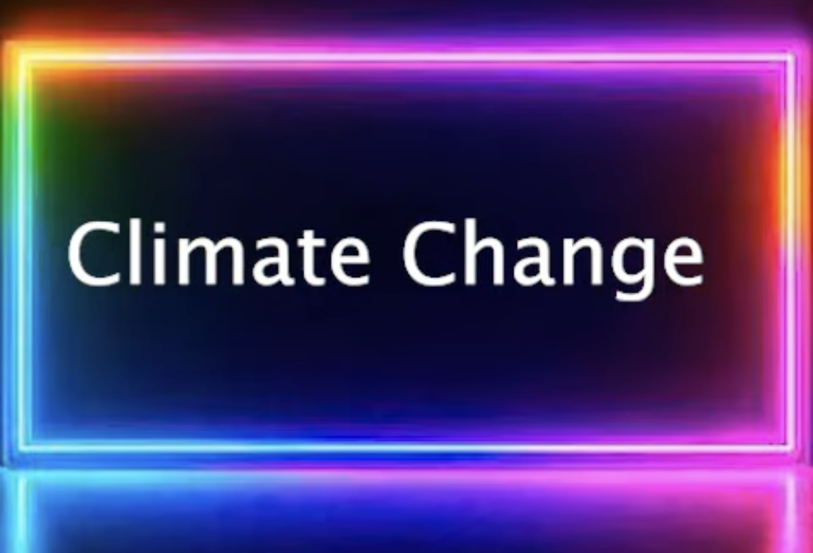
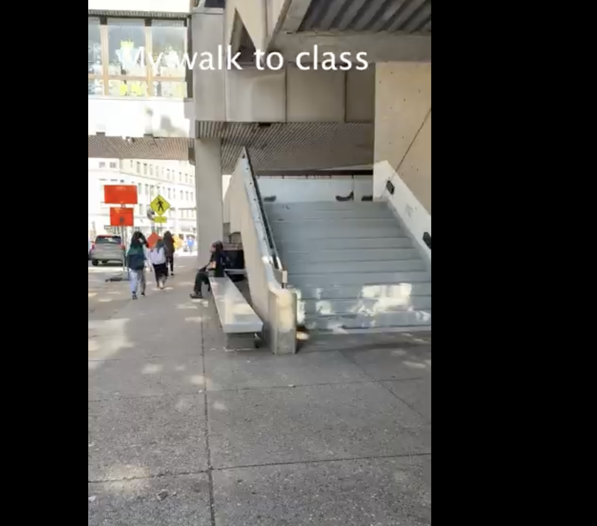
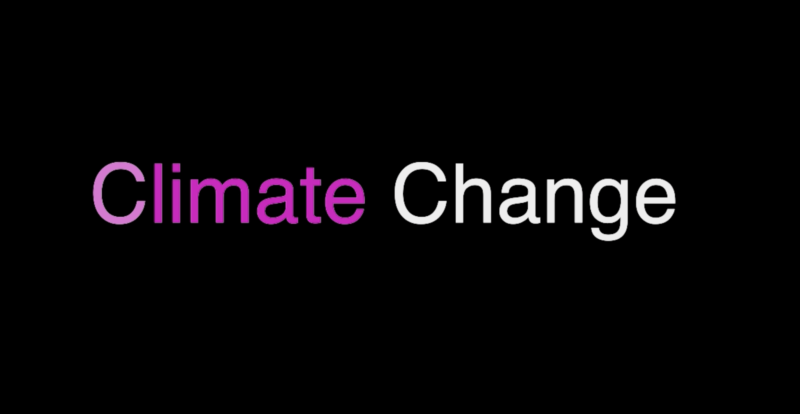

Phase 2/3: Expository Documentaries and Animation Effects
Making 8: Adobe Character

We used Adobe to create an animated talking character that also uses AI to change your voice.
Making 6: Adobe After Effects Title

We used Adobe After Effects to create an animated title that we could use within our projects.
Making 5: Video Essay

We used Premiere Pro to edit B-roll and make it into a video essay.
Making 4: Text/ Image Essay
We used Premiere Pro to create a video of images.
Making 7: Adobe After Effects

We used Adobe After Effects to make another title screen that we could use in our final project.
Phase 2/3 Course Goals
1. Foster the creative habits of mind
I fostered the creative habits of mind. Throughout Phase 2 I have been way more comfortable with trying new creative ideas that I may have leaned away from ealier in the semester. In making 8 we created an ai character that is able to track our faces and move. This opened my mind into many new ideas and directions that I could move foward with to start formulating ideas for my final project. As well as in Making 6 I was creative in coming up with a design that would be able to catch people's attention and made them interested.
2. Engage with others in a workshop environment
I have enggaged with others in a workshop enviroment a lot more in Phase 2. When sharing my work with others they are able to give me good advice that can improve my project and push my ideas into more detailed areas. Like in Making 7 I talked to others and tehy were able to give me advice on what colors would catch their eye and what kinds of animations and effects would draw people in. They also helped me narrow my research that we did each week. Being able to share it with them allowed me to know if I was going down the right path and making sure all my information made sense.
3. Think deeply about craft
I think deeply about craft when working on my projects. In making 5 I had to think deeply about my craft by chossing what videos would fit together and how that would be veiwed by the audience. As well as in Making 8 I thought deeply about which character would be the best to use to make people want to continue interacting with it. Lastly, I thought deeply about my craft when researching, I needed to be presice and know what I wanted others to get after seeing my final project.
4. Engage in sustained research and skills development.
I engage in sustained research and skills development. I was consitstantly researching about climate change for my final project for four weeks in a row. Each week I would find it getting easier to find the inportant imformation and scrap teh rest. Researching helped me to get a deeper understanding of my topic and to make sure that I was going to be putting correct and valid information on my website. I also had skill developments. In making 6 and 7 I learned how to use Adobe After Effects, which is an app I had never used before. It has allowed me to experiement and create new things for my project that I wouldn't have been able to do before this.
5. Learn to present your work
I have learned to present my work within phase 2 better than phase 1. I have become more cinfident in presenting my work to others. Like in making 4 and 5 I was excited to present my work to others and show them a little part of my life outside of this class. The biggest part about presetning my work was the big presentation that would explain what our website would be like. I had to learn how to make the audience get as excited about my project as I am. I would have to say things differently and present my work in an order that would compliment eachother and build to make it give off the effect I wanted

generated by Pitt Fuego
“Why make a spark when you can light a fire?